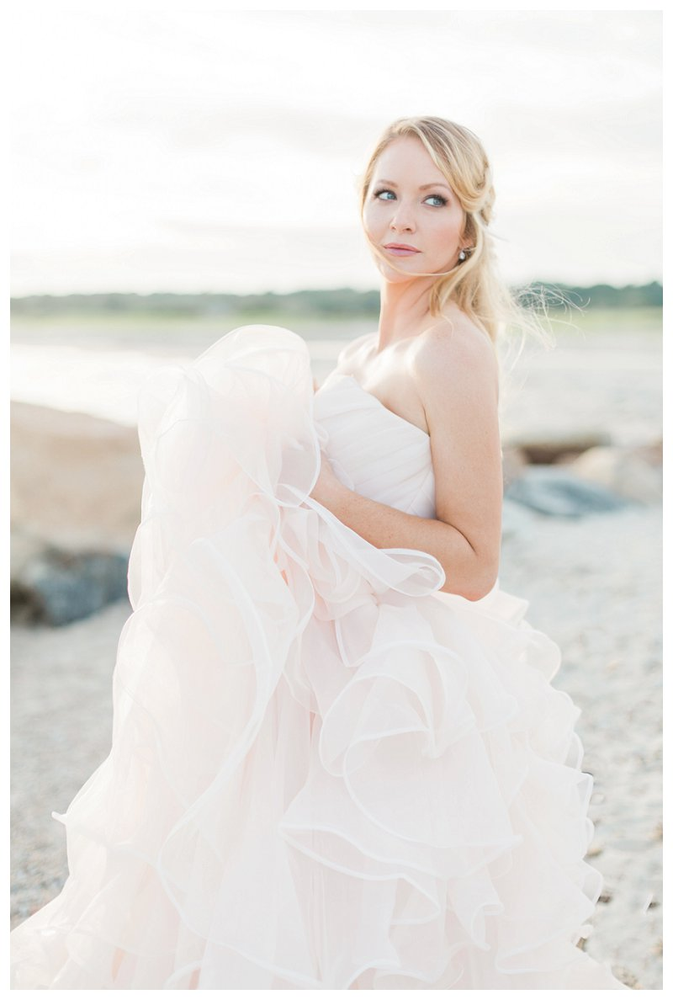

Inspiration
Pink & Blue Harkness Wedding Photography
31 August 2016

A bit longer in CT than expected and my camera was calling my name — a sneak peek of yesterday’s dreamy sunset bridal session, m’dears!
I photographed this Harkness Wedding Photography inpiration shoot while travelling in Connecticut this past summer, and teamed up with a couple of great local suppliers with the goal of playing on pantone’s colors of the year–blush and light blue. The natural blues and pinks of the Connecticut’s coastal sunset were the perfect backdrop given our color palate.
We chose a flowing blush gown from the Dress Boutique of Mystic, complimented perfectly by pink emerald and rose gold engagement ring, and blue water-colored caligraphed stationary from Salt Shop & Press. In keeping with the windswept coastal theme, Mercedes McCoy kept makeup natural and light with a loose romantic half updo. Sue from Gira created a beautiful bouquet with a windswept, asymmetric fine art feel–mirroring the movement of the ocean and the gorgeous gown.
I’ll be back in CT next year to photograph another wedding at Harkness so it was wonderful having the chance to scope out the scenery before hand! Most of this was shoot was photographed on medium format film processed by Richard Photo Lab. Enjoy!
Please send me an email at amy@fantonphotography.com if you would like to discuss your wedding photography needs! I would love to discuss your Connecticut wedding photography or Harkness Wedding Photography plans! :)